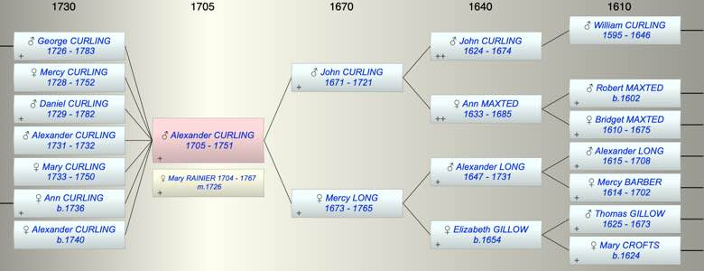

| [Index] |
| Alexander CURLING (1705 - 1751) |
|  |
| b. 1705 at St Laurence |
| m. 06 Jan 1726 Mary RAINIER (1704 - 1767) at St Laurence |
| d. abt 1751 aged 46 |
| Parents: |
| John CURLING (1671 - 1721) |
| Mercy LONG (1673 - 1765) |
| Events in Alexander CURLING (1705 - 1751)'s life | |||||
| Date | Age | Event | Place | Notes | Src |
| 1705 | Alexander CURLING was born | St Laurence | Note 1 | ||
| 1721 | 16 | Death of father John CURLING (aged 50) | St Laurence | ||
| 1726 | 21 | Birth of son George CURLING | St Laurence | Note 2 | |
| 06 Jan 1726 | 21 | Married Mary RAINIER (aged 22) | St Laurence | botp ex FMP PR | |
| 1728 | 23 | Birth of daughter Mercy CURLING | St Laurence | Note 3 | |
| 1729 | 24 | Birth of son Daniel CURLING | St Laurence | bap St Laurence 5 Nov 1729 | |
| 1731 | 26 | Birth of son Alexander CURLING | St Laurence | bap St Laurence 1 Jun 1731 | |
| 1732 | 27 | Death of son Alexander CURLING (aged 1) | Note 4 | ||
| 1733 | 28 | Birth of daughter Mary CURLING | St Laurence | bap St Laurence 22 Jul 1733 | |
| 1736 | 31 | Birth of daughter Ann CURLING | St Laurence | Note 5 | |
| 1740 | 35 | Birth of daughter Alexander CURLING | St Laurence | Note 6 | |
| 1750 | 45 | Death of daughter Mary CURLING (aged 17) | St Laurence | Note 7 | |
| abt 1751 | 46 | Alexander CURLING died | |||
| Personal Notes: |
| His mother's will refers to his four children and that he had predeceased her ie he died before 1765. His death was before 1751 as he is given as deceased when his daughter Mary died March 1750/51. His burial not found. |
| Created on a Mac™ using iFamily for Mac™ on 8 Oct 2023 |